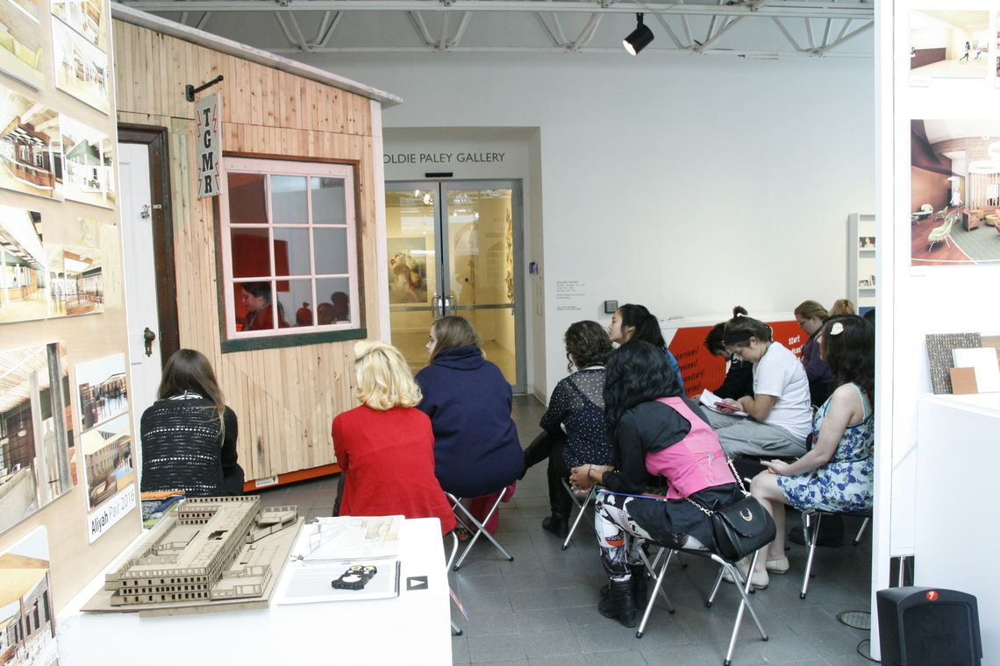
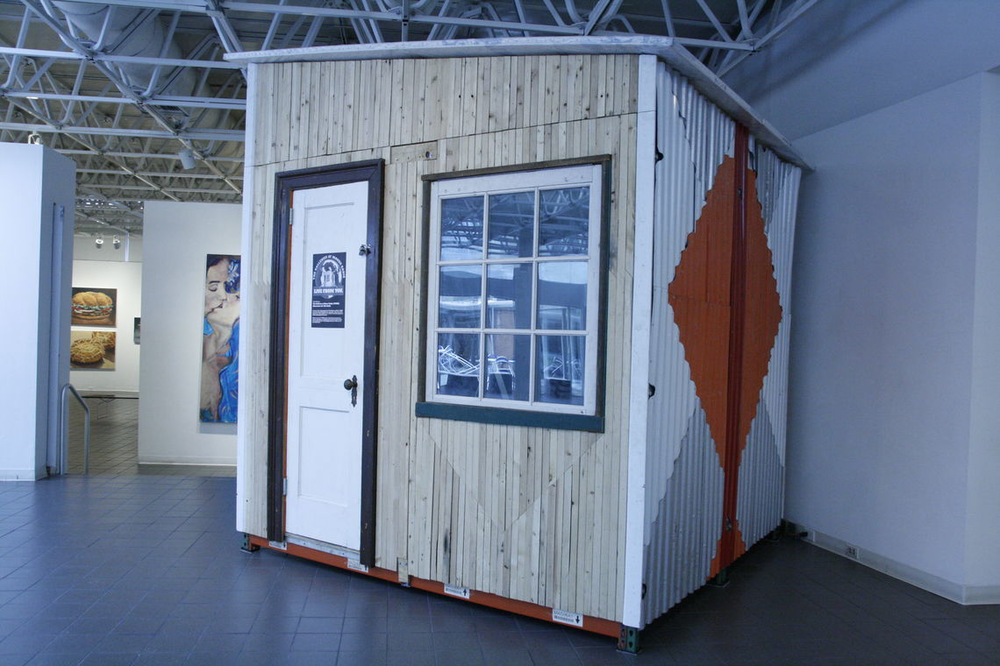
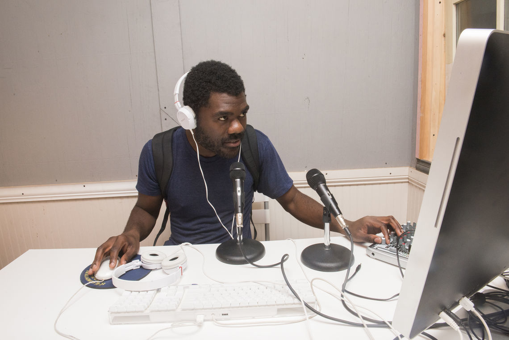
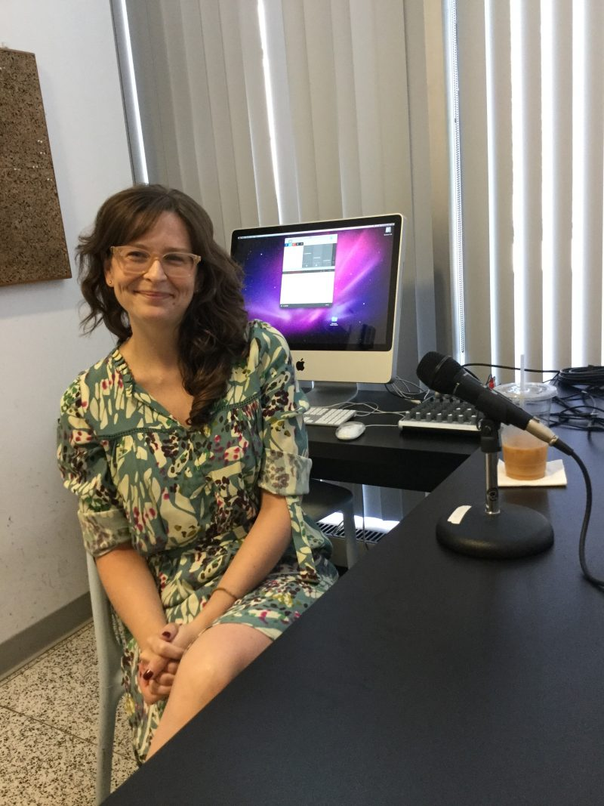

The Galleries At Moore radio station
The Galleries at Moore is a contemporary art center founded in 1968 at Moore College of Art in Philadelphia. The galleries create community through dialogue and participation, and inspire an appreciation for the visual arts as a vital force in shaping contemporary culture.
In 2015 I was hired to design a low-power community radio station for use by the galleries, to be inaugurally launched during the run of the exhibition Strange Currencies. In this work I developed a production plan for creation of the station, software and hardware systems, broadcast system, a digitization workflow, and a station manual with workflow plans. This system is still in use by The Galleries at Moore under the name TGMR Radio.
Links: Faculty, Students Use TGMR RadioWelcome to The Galleries at Moore Radio
Images by The Galleries at Moore   
Image by The Art Blog
